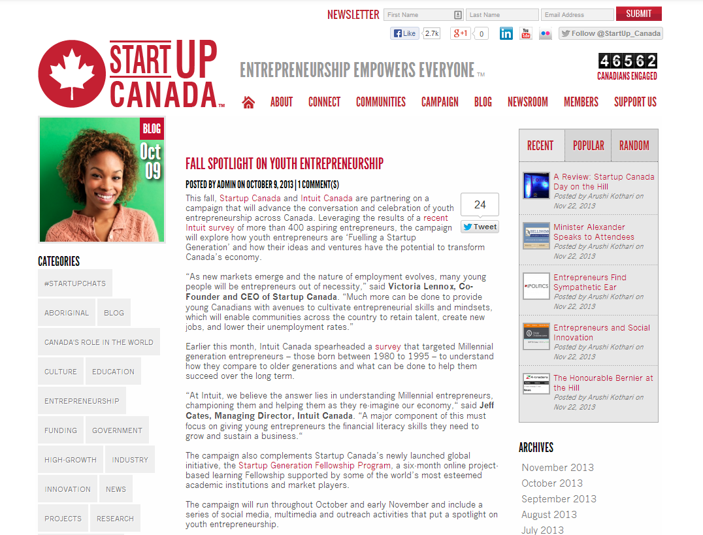

During the months of October and November 2013, Startup Canada worked with Intuit Canada to advance the conversation about and celebration of young entrepreneurs across the county. Called 'Fuelling a Startup Generation', this joint project was supported through a variety of targeted programming and outreach efforts that engaged Startup Canada's national stakeholder community. Over the course of the two months, Startup Canada led a social media and awareness campaign through PIVOT Magazine, YouTube, and its primary social media platforms of Facebook, Twitter, LinkedIn and Google+.
An initial press release was published on 9 October 2013 by Startup Canada to announce and promote the partnership between Intuit Canada and Startup Canada on the "Fuelling a Startup Generation" campaign.
On October 9th, the Startup Canada Multimedia Team went to Toronto to live stream and fuel social media activity around a special event hosted jointly by Intuit Canada and CYBF. In addition to supporting with streaming, social media and conducting five interviews, Startup Canada was also helpful in securing Sean Stanleigh from the Globe & Mail to MC the event as well as suggesting entrepreneurs from across Canada to participate in the "What I Wish I Knew" campaign. Videos from the event are included below:
On 14 November 2013, a Google+ Hangout hosted by Intuit and Startup Canada was held to discuss the topic of youth entrepreneurship in Canada. In addition to promoting these events through Startup Canada's mailing list, its LinkedIn group and Twitter account, this event was also promoted on Startup Canada's Facebook page and over 26,000 impressions were generated through these posts. Startup Canada live-tweeted the Google+ Hangout across its extensive network of Twitter followers, and generated nearly 2.5 million impressions (over 1 million more impressions than on a typical day).

On 18 October 2013, Startup Canada hosted a #StartupChats session with a panel in partnership with Intuit on the topic of building a network for success. This session had 18 participants, 23 listeners, 32 retweets and 54 favourites, and over 36 million Twitter impressions were generated. A summary of the chat can be seen on Storify.
On 8 November 2013, Startup Canada hosted a #StartupChats session with Stephen Sharpe of Intuit on the topic of financial literacy. This session had 5 participants, 19 listeners, 23 retweets and 11 favourites, and over 30 million Twitter impressions were generated. A summary of the chat can be seen on Storify.
In partnership with Intuit Canada, Startup Canada produced four video interviews speaking with experts, business leaders and entrepreneurs on the topic of youth entrepreneurship. Dr. Sean Wise of the Ted Rogers School of Business Management shared findings from recent research of his that showed increased financial knowledge leads to increased frequency of financial report generation, which in turn results in a lower chance of business failure. Jessica Ross of the Gold Island Bakery shared her experience of being a millennial entrepreneur and stressed the importance of strong financial skills. Jeff Cates, President of Intuit Canada, discussed the benefits of financial tools such as Quickbooks Online. Andrew Tait of Tait Laboratories shared insight on some of the advantages of today's millennial entrepreneurs.
Five articles were published in PIVOT Magazine as part of an exclusive series with Intuit Canada that focused on youth entrepreneurship in Canada. The series delved into some of the top issues facing young entrepreneurs today, and showcased some of Canada's up-and-coming startup founders who shared key lessons learned and turning point experiences they've had along their entrepreneurial journey.
Startup Canada regularly sends newsletters and e-blasts to its network of social media followers. Throughout this campaign, two e-blasts promoting Intuit Canada were sent out to promote the Google+ Hangout and the video interviews featured on PIVOT Magazine.
| Goal | Status |
|---|---|
| Promote the campaign with a press release | An initial press release was posted by Startup Canada |
| Promote the campaign across all social media channels | Over 9 million Facebook impressions and 85 million Twitter impressions were generated |
| Produce four video interviews | The video interviews are available on PIVOT's Youth section |
| Write five articles on youth entrepreneurship | The articles have been written and are available on PIVOT |
| Host two #StartupChats | Summaries of the #StartupChats are posted on Storify |
| Send out two community e-newsletter blasts | Two blasts were sent out to promote the campaign and the Google+ Hangout |
| Connect Intuit Canada with several entrepreneurs for the "What I Wish I knew" series | Startup Canada connected Intuit Canada with 8+ entrepreneurs |
| Set up the Google+ Hangout and provide a recap | The Google+ Hangout was successful and a recap is available on Storify |
Startup Canada continues to work on promoting Intuit Canada to entrepreneurs through all its social media channels, PIVOT Magazine, and special online events. Through the partnership of Intuit Canada and Startup Canada on the "Fuelling a Startup Generation" campaign, a growing number of entrepreneurs have been reached.

Edward Kim
Data Coordination & Reporting Lead

John Henwood
Strategic Relations Assistant
Entrepreneurship Empowers Everyone TM/MD
© 2013 Startup Canada. All Rights Reserved.